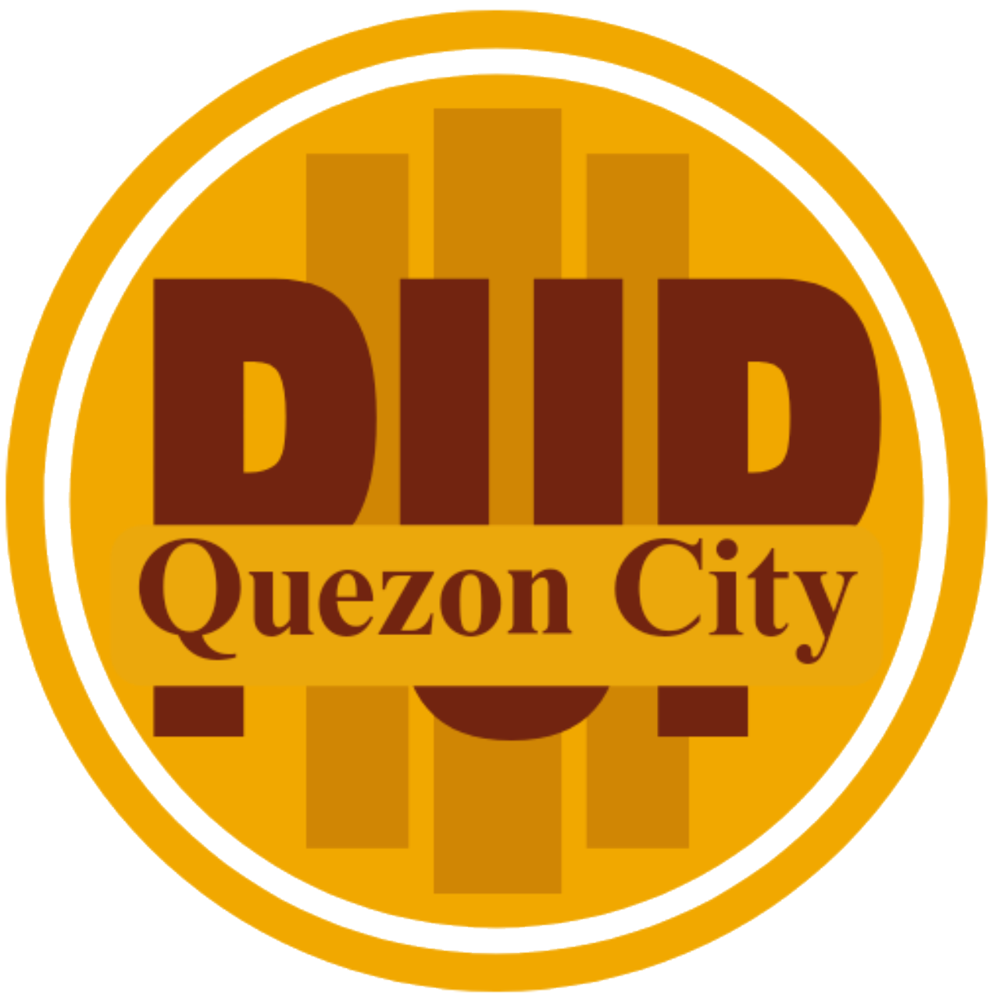

POLYTECHNIC UNIVERSITY OF THE PHILIPPINES
QUEZON CITY BRANCH
ACADEMIC PROGRAMS
Graduate Studies
Offered through the PUP Open University System
- Master in Information Technology
- Master in Educational Management
- Master in Public Administration
Undergraduate Degrees
- Bachelor of Science in Information Technology (BSIT)
- Bachelor of Business Technology and Livelihood Education major in Home Economics (BBTLEDHE)
- Bachelor of Business Technology and Livelihood Education major in Information Communication and Technology (BTLEDICT)
- Bachelor of Science in Business Administration major in Human Resource Management (BSBAHRM)
- Bachelor of Science in Business Administration major in Marketing Management (BSBA-MM)
- Bachelor of Science in Entrepreneurship (BSENTREP)
- Bachelor of Public Administration major in Public Financial Management (BPAPFM)
- Diploma in Office Management Technology Medical Office Management (DOMTMOM)